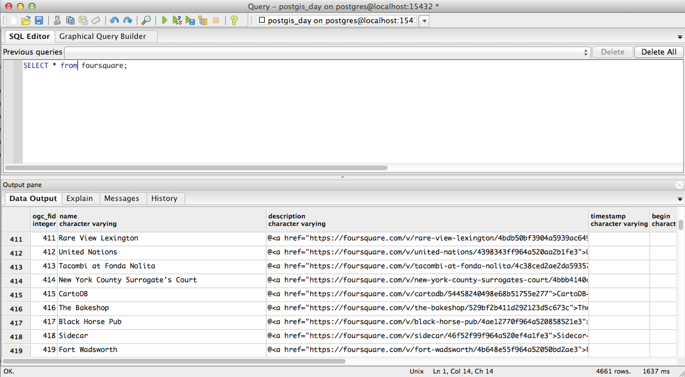
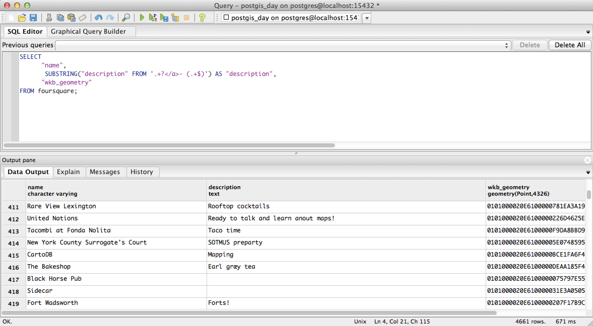
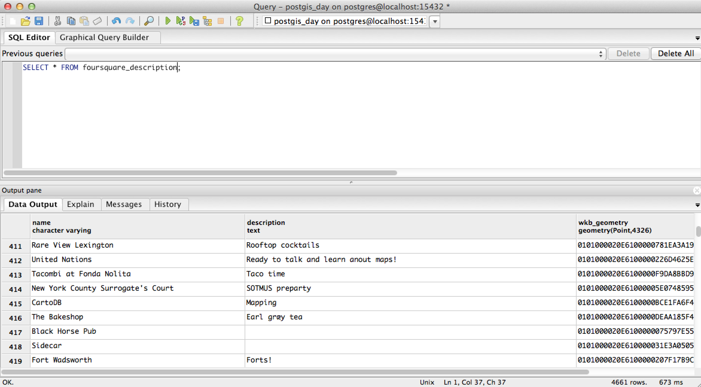
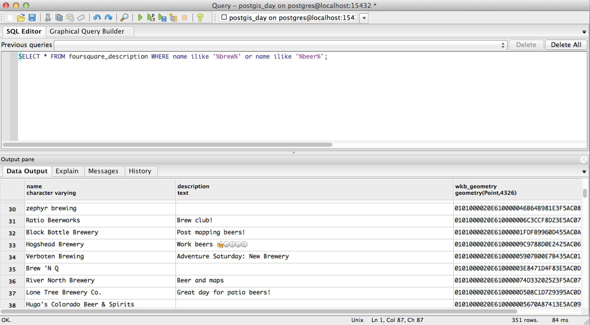
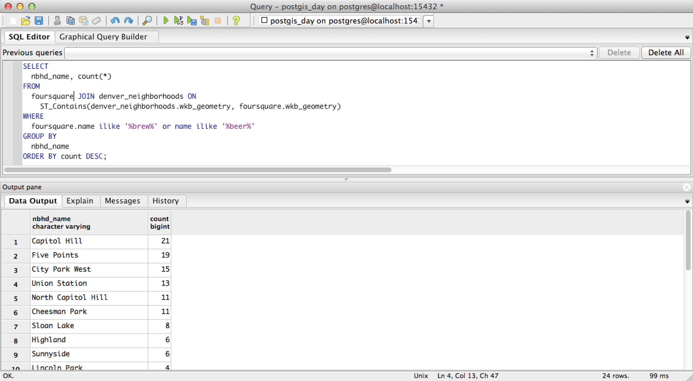

PostgreSQL Materialized Views
Making some PostgreSQL queries faster since September 2013
PostGIS Day: November 19, 2015
Jim McAndrew • @jimmyrocks • jim@loc8.us
What is a view?
- Useful for displaying the same data in different ways for different uses
- Runs the same query each time it is referenced
- Cannot have an index. A view uses the indexes of the underlying tables
View Example: Basic Query
View Example: Transform
View Example: Create View
CREATE VIEW "foursquare_description" AS SELECT "name", SUBSTRING("description" FROM '.+?</a>- (.+$)') AS "description", "wkb_geometry" FROM "foursquare";
View Example: Query View
What is a materialized view?
- Materialized views in PostgreSQL use the rule system like views do, but persist the results in a table-like form
- When a materialized view is referenced in a query, the data is returned directly from the materialized view
- Materialized views can be indexed
Materialized View: Initial Query
Join Example
Materialized View: Create
CREATE MATERIALIZED VIEW foursquare_beer AS SELECT foursquare.wkb_geometry FROM foursquare WHERE name ilike '%brew%' or name ilike '%beer%';
Materialized View: Add Index
CREATE INDEX idx_foursquare_beer_geom ON foursquare_beer USING GIST(wkb_geometry);
Materialized View: Refresh
REFRESH MATERIALIZED VIEW foursquare_beer WITH DATA;